6 folk traditions, one little studio
Old rules.
Fresh ink.
Draw Warli, Gond, Madhubani, Pattachitra, Kalamkari and a loose sketchbook, each by its own rules, in a studio that runs in your browser. Come for the peacocks, stay for the patterns.
What's in the studio
- 6living traditions
- 1,104motifs to place
- 67ready templates
- 72palettes from the source
- Freeexport to PNG, JPG and WebP
Ways to draw
Six traditions. Every one has rules.
No art school needed. Pick a tradition and its rules do the heavy lifting: what gets filled, how thick a line runs, what the border must hold.
-
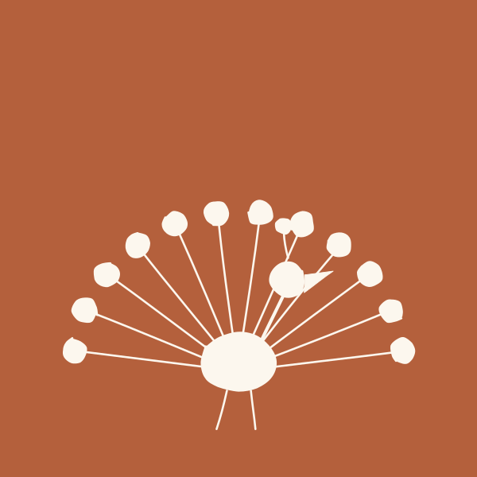
-
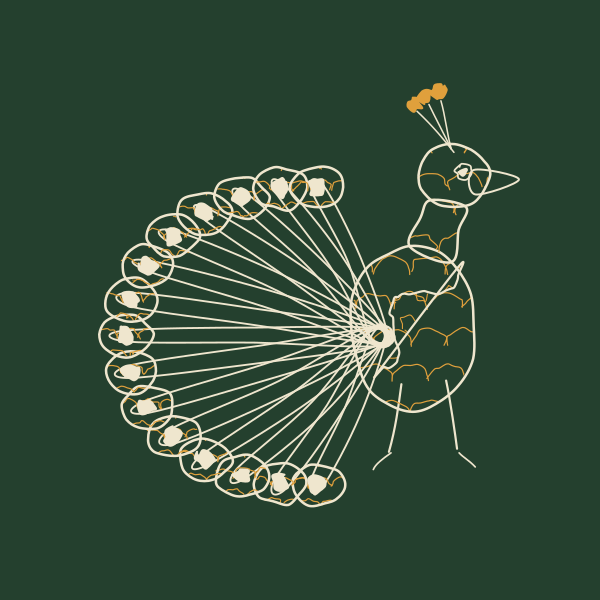
-
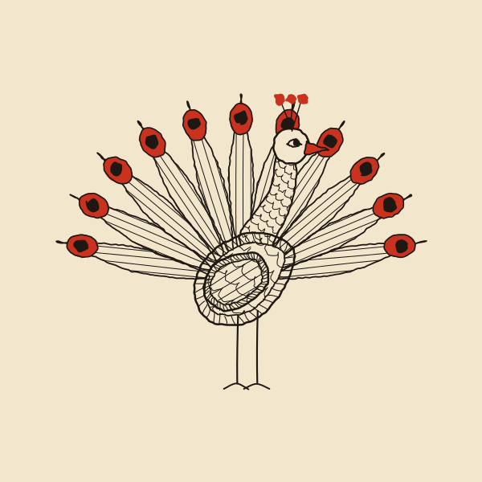
-
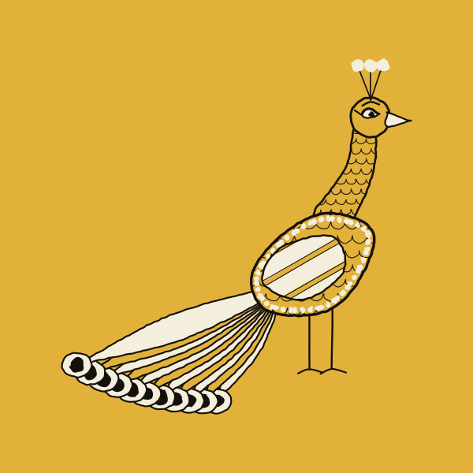
-
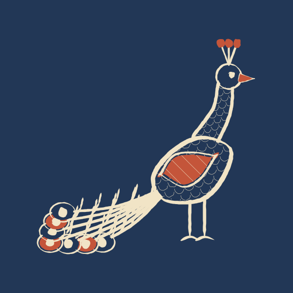
-
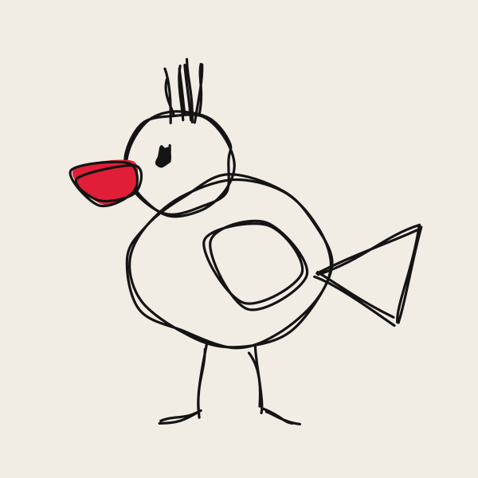
Have a go
The real studio, right here.
Pick a tradition, change the palette, or shuffle the hand. Every line below is drawn fresh, right now, in your browser.
Loading the studio…
How it works
Blank page to finished piece in three moves.
-
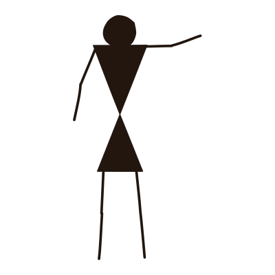
1 Pick a tradition
Start from a template or an empty board. The palette, line and fill switch to that tradition's rules.
-
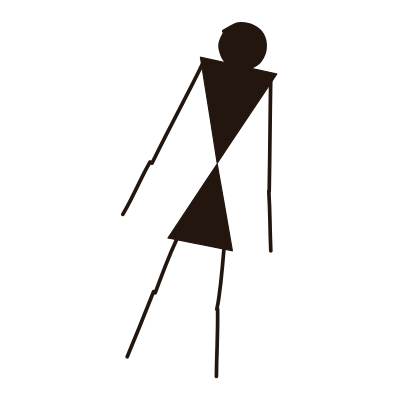
2 Make it yours
Place motifs, add your words in any of 217 fonts, recolour it, and shuffle the hand until it feels right.
-
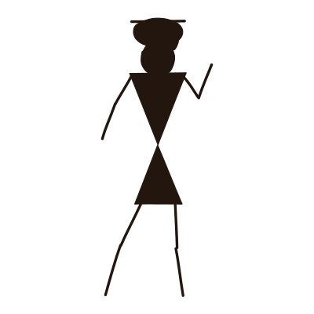
3 Take it anywhere
Export for a post, a print, an invite or a wall. Your files stay in your browser, never on our servers.
Pricing
Pick your pass. Every pass has perks.
Free covers everything you need to make the work. Pro is for getting it out into the world.
Scrawl is in beta, so every Pro feature is free to use right now.
-
Free
$0forever
No account, no card.
Start drawing- Every tradition, motif and template
- All 217 fonts, including Indian scripts
- PNG, JPG and WebP export up to 2×
- Unlimited files, saved in your browser
-
Pro monthly
$9per month
Cancel any time.
Free during beta- Everything in Free, plus
- Export at 3× and 4×
- Transparent backgrounds
- SVG and PDF export
- Print with bleed and crop marks
- Brand kit: your colours and fonts, one click away
-
Best value
Pro for life
$49once
Pay once, keep every update.
Free during beta- Everything in Pro monthly, plus
- No subscription, ever
- Every future tradition and update
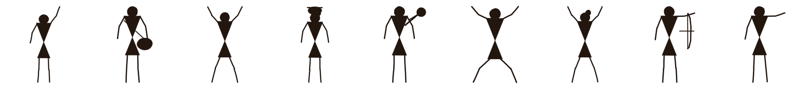
The rules are borrowed. The art belongs to its makers.
Every tradition here is made and kept alive by communities of artists across India. Scrawl learns their rules so you can sketch in their spirit. If you love the look, find the artists and buy their work.
FAQ
Good questions.
Do I need an account?
No. Scrawl runs in your browser and saves your work there. Nothing is uploaded unless you export it.
What is free during the beta?
Everything. While Scrawl is in beta every Pro feature is unlocked and wears a small Pro badge. At launch, Free keeps every tradition, motif, template and font.
What does Pro for life include?
Everything in Pro for a single payment, and every update that comes after you buy, new traditions included.
Can I cancel Pro monthly?
Any time. You keep Pro until the end of the month you paid for, and your files stay yours.
Can I use what I make commercially?
Yes, your designs are yours. Please don't pass them off as the hand-made work of a traditional artist.
Will it run on my old laptop?
Yes. Scrawl needs no install and no graphics card, just a browser from the last few years. It is at its best with a mouse or trackpad.